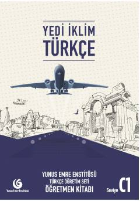

YİTurk tilini C1 darajasida o'qitish uchun mo'ljallangan o'qituvchi qo'llanmasi.
Ushbu o'qituvchi kitobi Yunus Emre Enstitüsü tomonidan chet tili sifatida turk tilini o'rganuvchilar uchun C1 darajasida tayyorlangan o'quv qo'llanmasidir. Kitobda turk tilini o'qitish metodikasi, dars rejalari va o'quvchilarga yordam beruvchi ko'rsatmalar berilgan. Nashr o'qituvchilarning dars jarayonini samarali tashkil etishi uchun mo'ljallangan.